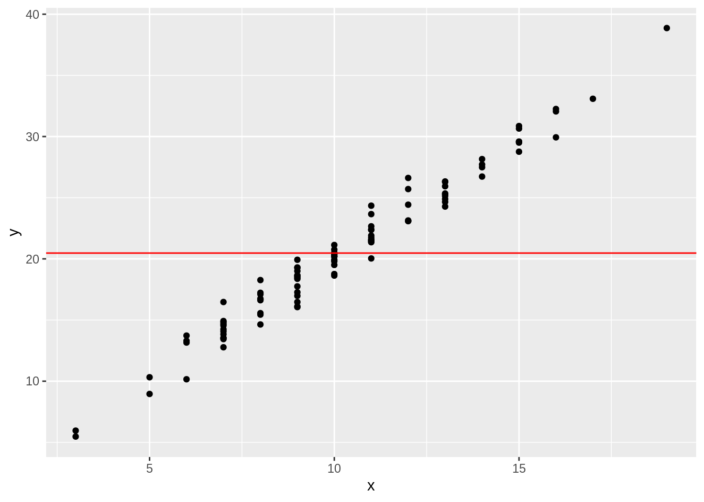

4 Functions
Functions allow you to automate boring tasks so that you don’t have to keep doing the same thing over and over again. There are several advantages of this.
- As stated above, it is faster for you.
- When something changes (e.g., a reviewer wants you to exclude outliers), you only need to change your code in one place, rather than several.
- You eliminate the risk of “copy-and-paste” mistakes.
This chapter covers the basics of function construction and use.
4.1 Anatomy of an R function
- Name
- Parameters/Arguments
- Defaults
- Code
- Return values
4.2 Base R functions
- Basic stat functions
- Random numbers!
x <- rpois(100, 10)
y <- 2*x + rnorm(100)
df <- data.frame(x, y)
library(ggplot2)
ggplot(df, aes(x, y)) +
geom_point() +
geom_hline(yintercept = mean(y), color = 'red')
Setting the random seed
paste()andpaste0()
4.2.1 Scoping
- What happens inside a function, stays inside a function
- Discussion of shadow variables
- If you really need a function to have side effects
<<-
4.2.2 Conditional execution
if()
if()/else()
else if()
ifelse()
4.2.3 the return() command
4.2.4 Anonymous functions
————— Part II —————–
4.3 Pipes
Sometimes (often) it is useful to execute several functions in a row, using the answer from the last function as the input for the next function. But this can make your code redundant and a little unclear.
To address this, we use pipes.
4.3.1 Basic usage
The %>% operator (pronounced “pipe”) takes whatever is on its left-hand-side (LHS) and applies it to the first parameter of the function listed on the right-hand-side. Install and load the magrittr package to use it.
install.packages('magrittr')
library(magrittr)4.3.2 Sending the LHS to another parameter
But what do I do when I need the LHS output to go to another parameter in the RHS function? I use the . to remind the RHS function I want the LHS output to go to a different place.
4.3.3 Convenient magrittr functions
4.4 More talk about the help files
4.5 Functions from other packages
- I can import functions from another package by…
- What if I only want to import once?
- Namespace considerations